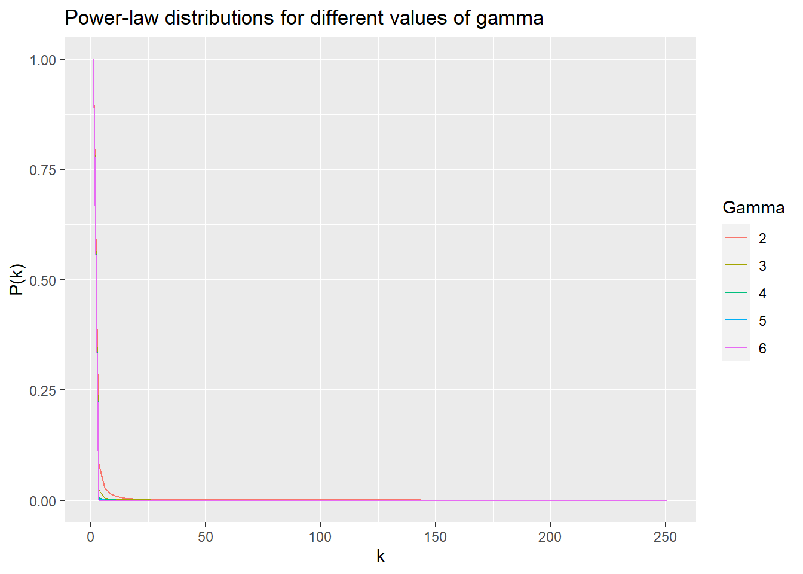

From similarity to network: Building graphs for community detection
Data Science in Archaeology, Part III.a.

It has been a little while since my last installment (Part II). End of year projects, deadlines, and (of course) the holidays have kept me busy. My thanks for your patience, and I’ll try and make it worth the wait.
Last time, we talked about different similarity metrics for sets or combinatorial problems and their particular strengths and idiosyncrasies. We were trying to find the best way to project our bipartite graph of archaeological proveniences and artifacts into individual one-mode graphs. Our goal is to find communities in each of those projected graphs to find meaningful assemblages (communities of artifacts) and contexts (communities of provenience locations).
That does, however, require that we talk about how we determine “best” for this particular scenario. Since our goal is community detection, we want to choose the metric that connects vertices that have the strongest associations while avoiding spurious or non-informative edges. I mentioned last time that we are, in part, looking to see if our projected graphs exhibit characteristics of a scale-free network. We’ll talk about that more later in this post, but it boils down to finding nodes that have a few strong connections rather than a lot of weak ones.
Since this is likely to be a fairly large and involved topic, I’m breaking Part III into two posts. This one will talk about translating our similarity measures into a network, and building the graphs. The next one will tackle the community detection methods, of which there are many.
For those just joining in, this is the Part III of a series in archaeological data science covering:
Part I – Creating and exploring bipartite and one-mode graphs,
Part II – Similarity measures for sets and graph adjacency,
Part III – Graph structure and community detection methods,
a.) Scale-free and small world networks
b.) Community detection methods
Part IV – Geo-spatial networks
I’ll continue using R for the coding, but all of this could be done with Python just as easily.
Introduction
In Part II, we went into some depth about what it means for sets to be similar and some ways to calculate a metric for that similarity. This time around, we’re going to look more closely into how to decide what it means to be similar enough. In other words, we want to find an analytically valid way to decide on a threshold of similarity that best captures the real connections between entities while avoiding spurious associations. That will also help to guide us in selecting which of the similarity metrics to use (i.e., overlap, Jaccard, or Sørensen–Dice) as we go on to start building our bipartite graph projections.
A quick recap…
We started (in Part I) by building a bipartite graph between artifact types and their locations, shown in Figure 1. To keep things simple, we’re using an un-weighted bipartite graph to look at co-locations of artifact types.

Looking at the bipartite graph, it seems apparent that there are some natural clusters or groupings. We found, though, that projecting this graph into its one-mode counterparts resulted in very densely connected networks.
Next, in Part II, we looked at different similarity metrics to find a better method of projection that the simple overlap provided in igraph. We looked at the similarities calculated with the Szymkiewicz-Simpson overlap coefficient, Jaccard similarity coefficient, and Sørensen–Dice coefficient for both provenience (Figure 2) and artifact types (Figure 3).

For proveniences, it looks like there are quite a lot that have some similarities in their artifact content.

In contrast to proveniences, the artifact types show far less similarity in where they co-occur.
Now what we want to do is look at how to go about selecting our similarity metric, how to find the appropriate thresholds of similarity, and what effects these have on the resulting graph projections. The goal is to find the right metric and threshold that will allow us to detect the underlying structure of the relationships within and between proveniences and artifact types.
Graph structure and scale-free networks
What we’re trying to do is find out if the inherent structure of our projected graphs, and therefore our bipartite graph as a whole, shows whether or not it is random. If the structure does not appear to be random, then we can reasonably infer that some other process is constraining or directing which artifacts appear where. In archaeological terms, that means that it’s likely that there is some intentional organization to the use of space for certain activities or that certain artifact assemblages are associated with different activities. If so, then we can find some partitioning of the artifacts and/or proveniences that have meaningful interpretations.
Mind you, we’re not actually trying to induce a structure. We are, however, expecting that there has been some manner of degradation in the “signal” of our data (see the introduction to Part I as to why). Our selection of similarity and threshold are meant to dampen the “noise” introduced to the site over time.
One way to determine if we have non-random structure in our graph is to find out if it exhibits scale-free network properties. A scale-free network is one in which the distribution for the degree of nodes in the graph approximate a power-law distribution, meaning that most nodes in the graphs have few connections while a few “hub” nodes have many. In a random network, there would be a more evenly distributed probability of node degrees and hub nodes would be far less likely to occur.
The presence of a scale-free network suggests that there is some latent non-random process at play that is driving differential attachments between those nodes. It may be that there is a different process of growth in the network, which archaeologically would be some different spatial or temporal process of artifact deposition. Alternatively, there may be a clustering process or preferential attachment by which certain nodes are more closely associated than others as in the case of hub nodes. A certain suite of artifacts that are all related to the same activities (i.e., an assemblage) would cluster together, for example.
Detecting scale-free networks
If a network is scale-free, then the distribution of node degree will approximate a power-law distribution of the form \(P_{\text{deg}}(k) \propto k^{-\gamma}\) where \(k\) is node degree and \(\gamma\) is some exponent. We will know \(k\), but we would obviously need to find the appropriate value for \(\gamma\) from our empirical distribution. To illustrate, lets look at the probability density function for various values of \(\gamma\) (Figure 4). We have 251 artifact types in our archaeological sample data, so lets look at the ideal power-law distributions if each node could have a maximum of 251 degrees.

Pretty easy to see that if our artifact type graph were scale free, the vast majority of the nodes would have a very small degree. Not so easy to see by how much. It’s a lot easier to see the effect of \(\gamma\) if we take the \(\log\) of \(P_{\text{deg}}(k)\) (Figure 5).

For every increment of the exponent \(\gamma\), the probability of high-degree nodes decreases much more quickly. This will help in selecting our similarity metric, when we look at which one produces a graph network that follows this sort of power-law in its degree distribution.
Why a scale-free network?
This is, of course, not the only way to look for non-random structure in a graph network. It’s reasonable,then, to be wondering why we would expect our archaeological networks should follow this sort of power-law structure. This subject could easily be its own article, to be honest, but the short-form version is that it’s because there is a natural connection between information entropy, power-law distributions, and the information communicated about an archaeological site by individual artifact types.1
The artifact types found on a site communicate information about the activities that occurred there, and the provenience or those types tell us about the spatial organization of those activities. There are, actually, some pretty close similarities with how different gene expressions correlate with phenotype.
The methods being presented in this series of articles originated with my experiments in adapting weighted gene co-expression networks (i.e., see WGCNA) to archaeological analysis.2 Scale-free network construction is one of the crucial steps in those methods.
From similarity to adjacency
We could simply use our raw similarity scores to build our networks, but we would still have very dense and noisy graphs. Instead, we want to find a method that boosts the signal of our graph structure, while suppressing the noise from spurious associations. To do that, we need to filter our similarity scores to form a graph adjacency matrix containing (as much as possible) only the most significant associations between entities. There are essentially two ways we can go about this.
The simplest is to just set a hard cutoff threshold – e.g., a specific value or quantile – and build an un-weighted or binary adjacency matrix. If we select the right threshold this can be very effective and results in a more sparse graph, but risks discarding legitimate connections along with the noise and tends to leave isolated nodes (i.e., nodes that aren’t connected to any others).
Another approach is to use a function to calculate a soft threshold value, along the lines of an activation function. This results in a weighted graph in which smaller similarity values are pushed closer towards zero, while very high similarity values would stay closer to one. The advantage is that there is less risk of suppressing significant connections. The downside is that the noise is still in there, albeit substantially dampened, and doesn’t decrease the graph’s overall density. Weighted graphs are also just a bit more complicated to parse for community detection.
Thankfully, the two are not mutually exclusive! A hybrid approach would be to boost the similarity signal by employing a soft threshold function, and then finding an appropriate hard threshold.
This is, in effect, the same as what ultimately happens when you apply a clustering algorithm to a distance matrix. Whether it’s selecting the number of clusters or setting a cutoff distance to a dendrogram, you’re essentially picking a hard threshold to decide membership. Graph community detection is quite closely related to non-graph clustering, particularly hierarchical clustering. Setting a threshold for building the adjacency matrix determines the resulting structure of the graph.
Hard thresholds
A hard threshold is the simplest to implement – any similarity value lower than your threshold goes to zero, and equal or higher goes to one. The trick is in picking that value, which explore a little later.
So, lets formally define our hard threshold adjacency matrix3 as \(A_{i,j}\) , our similarity matrix as \(S_{i,j}\), and our threshold value as \(\tau\).
\[ A_{i,j} = f(S_{i,j}, \tau) \equiv \begin{cases} 0 & \text{if } S_{i,j} < \tau\\ 1 & \text{if } S_{i,j} \geq \tau \end{cases} \]
We can easily code that up as a function hard_threshold_adj, which takes a similarity matrix and a threshold value as arguments.
hard_threshold_adjacency <- function(sim_mat, tau) {
return(ifelse(sim_mat < tau, 0, 1))
}